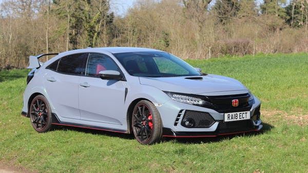

Though the Civic Type-R has a long history, my web page will be focused on the most recent generation, the FK8. This is the fifth generation of the civic type-R, and it is the first one to be offered in north america. Before we get into the details of this new generation type-R, here is a quick list of the previous years and models of civic type-R's:
There are many differences between a base model civic, civic sport, and civic type-R, but it is mainly based on the 10th generation honda civic, which by itself is a great modern vehicle. There are major differences between the models, and the different engine specifications are shown in the table below:
| Engine specifications | Civic type-R | Civic sport | civic |
| displacement | 2.4 litre | 1.5 litre | 2.0 litre |
| forced induction | turbocharger | turbocharger | N/A |
| horsepower | 306 HP | 180 HP | 158 HP |
The major differences continue between the different models from the exterior of the cars. The type-R has a track oriented design, with vents in the hood and fenders to help keep the engine and brakes from overheating. The type-R also has aeordynamic pieces such as an aggressive front splitter and a large rear wing to create more downforce around the track and faster lap times.
|  | |
A more in depth look at the exterior features of the new type-R can be found HERE. A really interesting aspect of the type-R is the triple exit exhaust. Cars usually have one, two, or sometimes four, but this car has 3. During normal driving the car only expels exhaust gasses through the left and right exhausts. When sport mode is activated from inside the car, a valve opens up the central exhaust pipe which gives the car a louder and more sporty exhaust note.
Along with its good looks, this car also performs amazing around a track. It set many records for the fastest lap in its class, which is the front wheel drive (fwd) class. It actually set the record for the fastest fwd lap time at the Nürburgring. This is a world renowned race track located in west Germany, and it is an impressive acclompishment considering the amount of competition in the fwd, "hot hatch" car market. Here is a video from youtube from the youtube channel L'argus, which is a French creator that reviews cars and also takes them around the Nürburgring:
Overall, the type-R can be summarized by a long list of benefits and a couple of negatives: